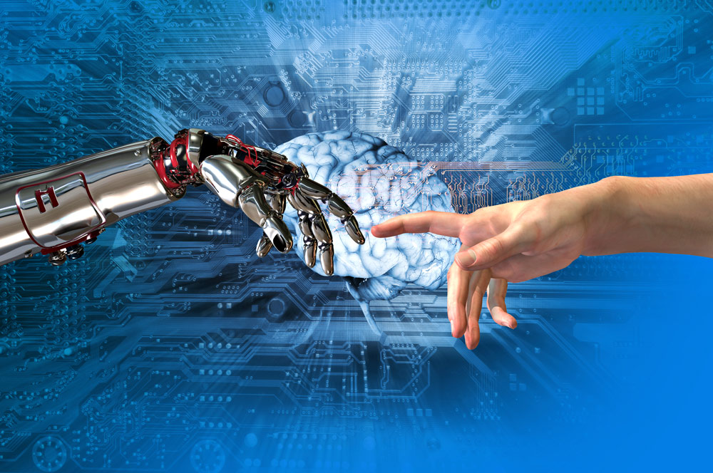

artificial intelligence
links

The world accepts radical changes in various fields, and the medical field in particular is one of the areas that are witnessing the most important achievements and changes that doctors and health care providers are unable to keep up with year after year thanks to modern technology, and the goal is to serve humanity in the health sector in accordance with the highest technological standards in the field of artificial intelligence.
The concept of "artificial intelligence" has entered the medical field from the broadest doors, where techniques of artificial intelligence are increasing in various fields, including medicine. This modern concept includes diagnosing and treating most diseases in an intelligent manner according to the highest technical standards and the latest technological practices.
However, it must first be emphasized that the techniques of artificial intelligence and its use in the fields of medicine will not replace doctors at all, according to the findings of the latest studies in this regard, but rather it will help in the accuracy of diagnosis and in providing clinical care as will become medical imaging and x-ray devices To help diagnose diseases more easily and quickly, as well as the possibility of collecting medical information and data about the patient and its role in obtaining better care. Artificial intelligence also increases the ability of healthcare professionals to better understand the daily patterns and needs of the people they care about, and the use of artificial intelligence is used to detect diseases, such as cancer, more accurately and in its early stages.
Collaboration between doctors and artificial intelligence techniques
According to expert expectations, cooperation between artificial intelligence technologies and doctors will contribute to improving treatment options and improving health services, as well as the possibility of cure some incurable diseases. At the present time, medical companies are developing new technologies that revolve around the diagnosis of some diseases so that the devices recognize the shape of the image and then determine the type of disease expected according to the results and analysis using artificial intelligence techniques, which will help doctors to obtain a faster diagnosis of diseases and thus higher chances of success treatment.
Artificial intelligence has the potential to diagnose diseases through a set of signs, symptoms, strange patterns in blood analyzes, and abnormal signals that appear in cells with the onset of increased disease power, according to researchers at the University of Nottingham earlier this year as it was found that many Artificial intelligence systems can detect people at risk of having a heart attack. Other artificial intelligence systems at Stanford University in California, USA, have learned to discover breast cancer in tissue samples.
Robot and artificial intelligence in medicine
The robot supports doctors in performing dangerous surgeries, working side by side, where the surgeon guides the robot via a computer console of commands to move the robot arms, and is programmed on the steps of the operation that will be done with high accuracy, lighter pain and a very small wound. In addition to the possibility of remote surgery, the use of the robot in surgical procedures reduces the patient's sense of pain and reduces complications of surgical cracks and bleeding during the surgery, and thus abandoning the transfer of large amounts of blood to the patient, which leads to a speedy recovery and return to normal life. The robot in surgical procedures is done with the help of an automated and computerized technique, so that the surgeon can perform all possible surgeries by laparoscopy in various surgical specialties.
Of course, the robot is operated by the surgeon, which is equipped with four arms, one for imaging and three for surgery, and these arms enjoy the maximum degree of freedom and movement better than the human hand. Inserting these arms into the patient's hollow is through very accurate wounds, which gives the doctor better freedom of movement compared to traditional operations, but the matter has surpassed surgeries, as some parts in China have been developing robots that rely on artificial intelligence for a more accurate diagnosis; This matter is still under experiment, but we should get acquainted with the mechanism of work followed. The robot or the robot listens to the patient's complaint and symptoms, so he provides him with a list of necessary examinations and then medical advice based on results, so that doctors from humans then verify the treatment.
The new robot program contains diagnostic models for more than 30 diseases, such as tuberculosis and depression, which may be incorrect in its diagnosis. The new artificial intelligence doctor, according to the experiments that have been done, can continue to receive information, experiences and medical diagnoses, as it contains a database that includes tens of millions of medical cases. The robot works through sophisticated software that is managed through powerful computers as super researchers without getting tired to find cures for diseases through the analysis of huge chemical, biological and medical databases, suitable for it.
As well as a large number of scientific research with a much faster rate of human effort, with the aim of defining new biological targets and ultimately reaching a cure. In order to achieve this, the robot should be provided with accurate information about the patient to diagnose the disease and prescribe the appropriate medicine for it. On the other hand, the hospital administration and databases inside the hospitals have benefited greatly from the organization of work and the improvement of management by providing the possibility of collecting information about patients and their medical history, which helps in reaching statistical statistical results on them.
In addition to the availability of the opportunity for accurate diagnosis thanks to the doctor's full knowledge of the patient's file and every detail to extrapolate important and important relationships between diseases and diagnoses. These advanced hospital systems have contributed to enhancing the ability to accurately diagnose and avoid random prescribing of medications as well as avoid negative reactions that can occur.